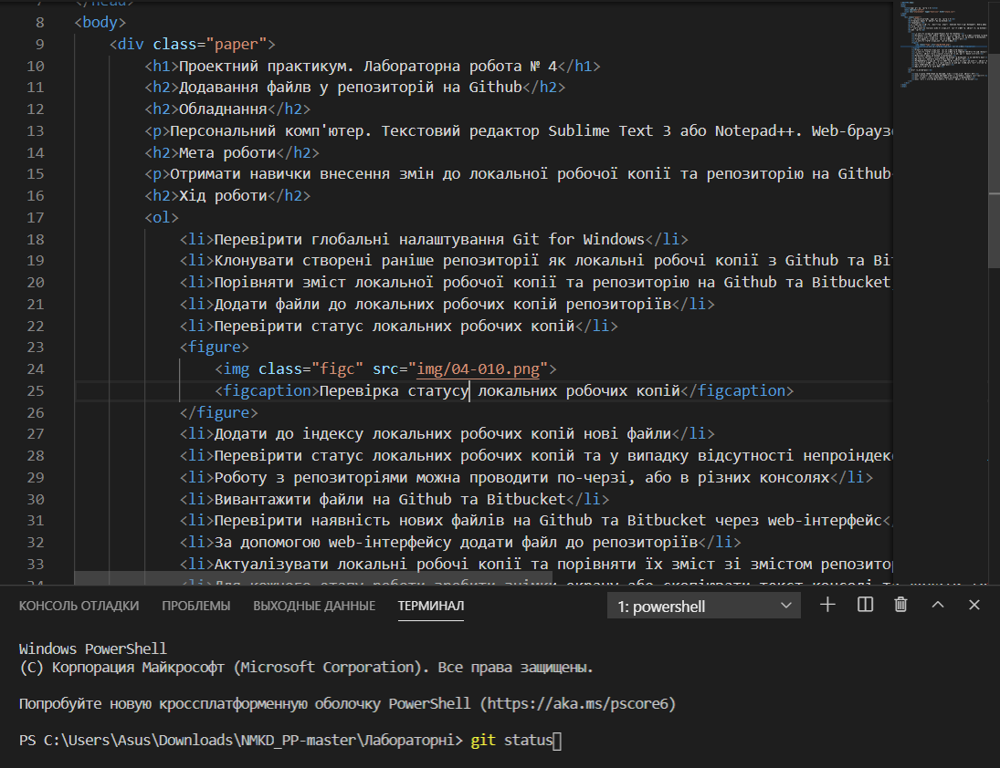

Додавання файлів у репозиторій на Github
Обладнання
Персональний комп'ютер. Текстовий редактор Sublime Text 3 або Notepad++. Web-браузер Chrome, Firefox, Opera, Internet Explorer, Git for Windows
Мета роботи
Отримати навички внесення змін до локальної робочої копії та репозиторію на Github
Теоретичні відомості
Хід роботи
- Перевірити глобальні налаштування Git for Windows
- Клонувати створені раніше репозиторії як локальні робочі копії з Github та Bitbucket
- Порівняти зміст локальної робочої копії та репозиторію на Github та Bitbucket, впевнитись що зміст співпадає
- Додати файли до локальних робочих копій репозиторіїв
Перевірити статус локальних робочих копій командою
git status Перевірка статусу локальних робочих копій - Додати до індексу локальних робочих копій нові файли командою
git add - Перевірити статус локальних робочих копій та у випадку відсутності непроіндексованих файлів виконати операцію фіксації (комміту) командою
git commit - Роботу з репозиторіями можна проводити по-черзі, або в різних консолях
- Вивантажити файли на Github, Gitlab та Bitbucket командою
git push - Перевірити наявність нових файлів на Github, Gitlab та Bitbucket через web-інтерфейс
- За допомогою web-інтерфейсу додати файл до репозиторіїв
- Актуалізувати локальні робочі копії та порівняти їх зміст зі змістом репозиторіїв через їх web-інтерфейси
- Для кожного етапу роботи зробити знімки екрану або скопіювати текст консолі та додати їх у звіт з описом кожного скіншота
- Дати відповіді на контрольні запитання
- Зберегти звіт у форматі PDF
Контрольні питання
- Яка команда відповідає за фіксацію змін в локальному репозиторії?
- Який синтаксис має команда фіксації змін? Що необхідно вказати обов'язково?
- Якою командою можна вивантажити файли на Github чи Bitbucket?
- Яким чином в консолі перемкнутись з одного репозиторію на інший?
- Що робить команда
git add?